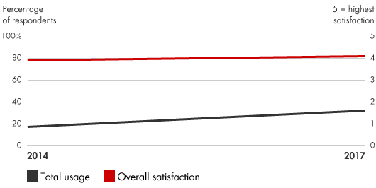
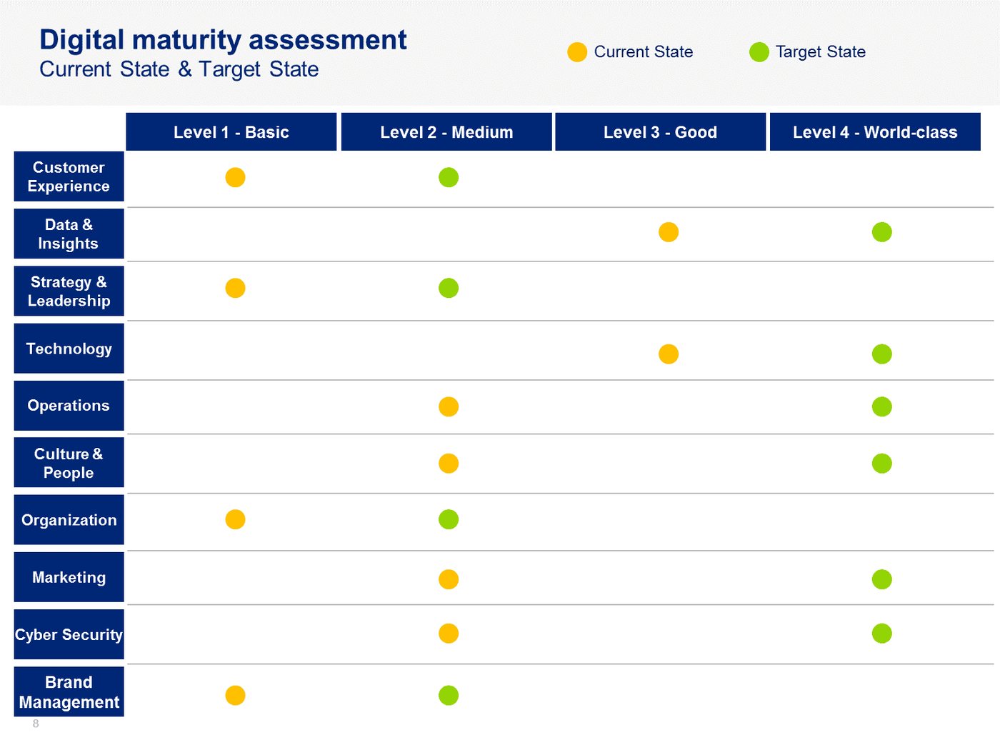

📘معرفی ابزار
دیجیتالی شدن به تغییرات استراتژیک سازمانی و برنامه ریزی شده اطلاق میشود که بر پایه فناوریهای دیجیتال و برای خلق و طراحی استراتژیهای داده محور صورت میپذیرد. تحول دیجیتال به معنای یکپارچهسازی فنآوریهای دیجیتالی در برنامههای راهبردی و عملیاتی سازمان میباشد. برنامههای تحول دیجیتال بر روی فرصتها در کل سازمان تمرکز میکند تا شرایط برای ادغام هر چه بهتر دو دنیای دیجیتالی و فیزیکی فراهم شود و شرایط بکارگیری پیوندهای دیجیتال در هر یک از پیوندهای سنتی در زنجیره تجربه مشتری بررسی شود. البته این موضوع میتواند به کشف پیوندهای فناورانه جدیدی منجر شود که پایه تجارت را تقویت کند و تجربیات بهتری برای مشتریان ایجاد کند. هدف این فرایند گسترش مزایای رقابتی، کاهش هزینهها و سودآوری بیشتر است.
🆕بهروزرسانی ۱۴۰۵
این بخش در نسخهٔ آنلاین ۱۴۰۵ افزوده شده است. متن اصلی کتاب (آبان ۱۳۹۹) در بخشهای بعد بدون تغییر آمده است.
آمار و شواهد تازه
- نظرسنجی ۲۰۱۸ McKinsey: فقط ۱۶٪ پاسخدهندگان گفتند تحول دیجیتال هم عملکرد را بهبود داده و هم تغییرات را پایدار کرده است. (این مرجع هنوز پرارجاعترین داده در این حوزه است.) (منبع: McKinsey، Relia)
- هشدار روششناختی: عدد رایج «۷۰٪ تحولهای دیجیتال شکست میخورند» تعریف یکسان و مطالعهٔ اولیهٔ قابلاتکا ندارد؛ بهتر است همراه با منبع و تعریف دقیق نقل شود. (منبع: Relia)
- در پیمایش ۲۰۲۵ McKinsey، ۸۸٪ سازمانها هوش مصنوعی را در دستکم یک کارکرد به کار میبرند، ولی حدود یکسوم آن را مقیاس دادهاند. (منبع: McKinsey)
چه چیزی تغییر کرده؟
تحول دیجیتال امروز عملاً با «تحول مبتنی بر هوش مصنوعی» در هم تنیده است. درس مشترک پژوهشها ثابت است: رهبری، مهارتهای نیروی انسانی و بازطراحی فرآیند، مهمتر از خود فناوری هستند.
نمونه ابزارها و نرمافزارهای امروزی
نامها صرفاً نمونهاند و توصیه یا تبلیغ تجاری نیستند؛ شرایط دسترسی و تحریمها را برای سازمان خود بررسی کنید.
منابع این بخش
🧩فرآیند اجرا
تحول دیجیتال در نهایت باعث تخریب و جایگزینی مشاغل فیزیکی با راهحلهای کاملا دیجیتالی میشود. بنابراین لازم است بر روی مدیریت تغییر مشاغل برای رقابت موثر در دنیای کاملا دیجیتال تمرکز شود. هدف تحول دیجیتال ترکیب بهترین تجربیات دنیای دیجیتال و دنیای فیزیکی برای خلق منابع جدید ارزش است. تحول دیجیتال مستلزم این است که مدیران نه تنها ترکیبی از مشاغل بلکه ترکیبی از توانمندیهای افراد را ایجاد کنند. اقدامات زیر در به حداکثر رساندن شانس موفقیت در تحول دیجیتال کمک میکند:
- شناخت درجه دیجیتالی شدن در محیط جاری و ارزیابی تهدیدات آتی
- ایجاد چشم اندازی از نحوه جذب مشتری و دستیابی به رشد و سودآوری با استفاده از فناوریهای دیجیتالی
- تهیه برنامهای برای بهرهبرداری از بهترین منابع ارزش حاصل از دیجیتالی شدن، افزودن پیوندها و تقویت پیوندها در زنجیره تجربه مشتری
- بسیج منابع در سازمان، تغییر رویکرد به نوآوری، ایجاد مدلهای عملیاتی مناسب، و ساخت یک تیم برای رهبری تحول دیجیتال در سازمان
💼موارد استفاده در کسبوکار
تحول دیجیتال همه کارکردهای سازمان را درگیر میکند، به این معنا که از فنآوریهای دیجیتالی برای اختراع مجدد هر پیوند در زنجیره تجربه مشتری استفاده میشود، از جمله:
- توسعه محصول و خدمات جدید
- شخصی سازی بازاریابی برای کمک به مشتریان در کشف و ارزیابی پیشنهادات شرکت
- سفارشی سازی محصول و خدمات
- فرآیندهای خرید
- شبکههای زنجیره تامین و انجام سفارش
- مدلهای سرویسدهی و استفاده از محصول
- فرآیندهای بازگشت و ارتقای محصول
- سیستمهای بازبینی و بازخورد محصول
📈میزان محبوبیت در طی زمان

🧪نمونه ابزار / الگو

سنجش تحول دیجیتال در سازمانها از طریق مدل های بلوغ قابل اندازهگیری است. سازمان میتوان میزان بلوغ را وضعیف موجود اندازه گیری نموده و پس از تعیین سطوح مطلوب، نقشه راه خود را جهت تحول دیجیتال ترسیم کند. سنجش بلوغ دیجیتالی در ابعاد مختلف مشتری، استراتژی، فناوری، عملیات، فرهنگ و دیتا قابل انجام است. برای مطالعه بیشتر به [۱] مراجعه شود.
⬇️چکلیست قابلدانلود
چکلیست اجرایی این ابزار را دانلود و در سازمان خود تکمیل کنید. گامها از فرآیند اجرای همین صفحه برداشته شدهاند و ستونهای مسئول، موعد و وضعیت برای پیگیری تیمی خالی گذاشته شده است.
⬇ دانلود چکلیست (Word) · تحول دیجیتال📚مراجع مطالعه بیشتر
- Digital Transformation & Maturity, https://www.tmforum.org/digital-transformation-maturity/
- Bain & Company, Digital Transformation: https://www.bain.com/insights/management-tools-digital-transformation
- Baker, Mark. Digital Transformation. CreateSpace, 2014.
- Davidson, Alistair. Innovation Zeitgeist: Digital Business Transformation in a World of Too Many Competitors. Eclicktick Consulting, 2013.
- Kaufman, Ira, and Chris Horton. Digital Marketing: Integrating Strategy and Tactics with Values. Routledge, 2014.